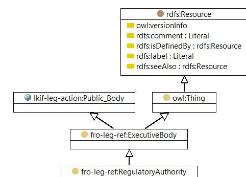

-

owl:Class

|
| owl:Class |
|
| Regulatory Authority |
|
| A regulatory agency (also regulatory authority, regulatory body or regulator) is a public authority or government agency responsible for exercising autonomous authority over some area of human activity in a regulatory or supervisory capacity. An independent regulatory agency is a regulatory agency that is independent from other branches or arms of the government. |
| Instances | |
|---|---|
| fro-leg-ref:U.S. Securities and Exchange Commission | |
© 2016 Jayzed Data Models Inc. generated with TopBraid Composer back to Financial Regulation Ontology or documentation index